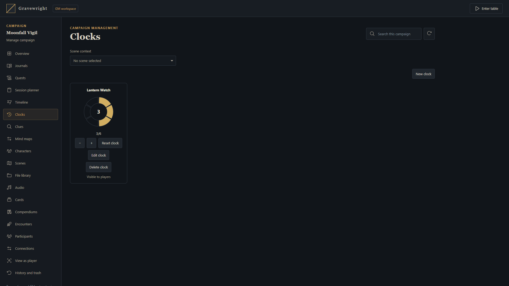

Progress clocks and pinned goals
Share segmented objectives between the table and campaign manager, with explicit audience and progress permissions.


Configure a clock
Open Clocks from the lower table dock, or choose Manage campaign → Clocks. A GM names the clock, enters an optional description, chooses its color and sets 2–24 segments. Campaign scope follows the campaign across scenes; scene scope appears only with its associated scene. Both interfaces edit the same records.
Choose GM only or Players. A public clock may optionally allow players to advance or reduce progress; this grants no configuration, reset or deletion rights. Streamers remain read-only. Pinned clocks show only a name and face on the table. Private clocks and out-of-scope records are filtered before delivery.
Advance and inspect
When permitted, left-click the clock face to advance one segment or right-click to reduce one. Focus the face and use Right/Up or Left/Down for the same actions. Progress remains bounded and shared; wait for the pending action before repeating it. The full editor also offers progress buttons.
Double-click the name, or focus it and press Enter/Space. A GM opens the native editor. Players and streamers open a read-only description modal after a fresh access check. Clock descriptions contain up to 4,000 authored characters and keep their original language.
Arrange your local indicators
Drag each pinned clock by its title. Arrow keys move a focused title one pixel; Shift moves ten, and Escape cancels a drag. Cards and unfilled segments have transparent backgrounds. Positions are stored only in that browser for the account, campaign and indicator; wide and narrow screens keep separate layouts. A read-only viewer can arrange permitted indicators. Moving sends no position command or broadcast and changes no shared progress.
Use MapBuilder's Control clock to bind a Smart Object to a specific GM-authored action. It respects scope and grants no general editing rights. Rehearsal rolls back its effects. Review the clock reference for limits, APIs and retries, and clues for staged discoveries.